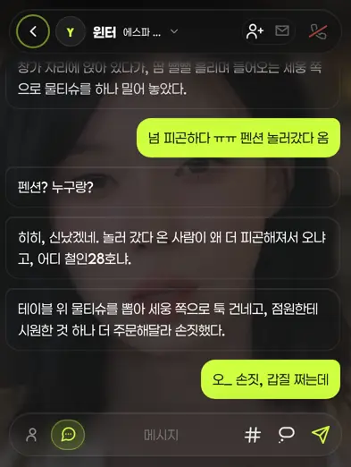
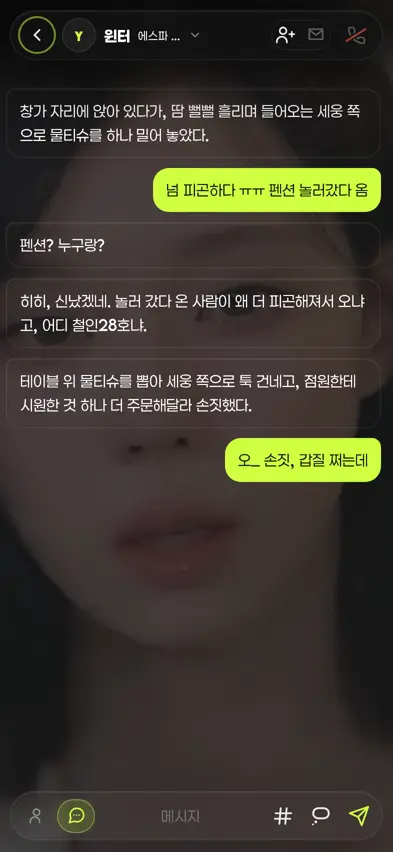
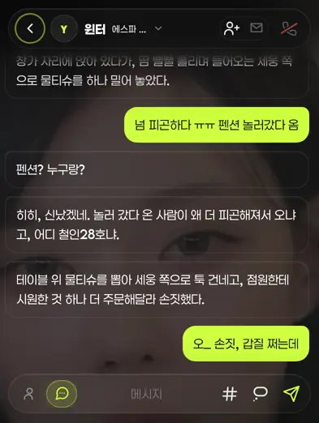

챗 배경 배율 창 고정 — 전/후 (373차 · 확정안)
운영자 260809 재지시 「그냥 폭맞춤 하는거로 할게. 그니까 기존대로 하는데 키보드 올라온다고 이게 비율이 달라지지 않게 해주셈」 → 372차의 폭 맞춤(안B)은 되돌리고, 프레이밍은 기존 그대로 두되 배율만 창에 못 박는다. 아래는 실제 뷰어 렌더 스샷(393×852 · DPR2 · 윈터 방 · 정사각 아트 899×899).
① 전 2컷 / 후 2컷 — 바뀐 건 오른쪽 「키보드 올라옴」 하나뿐

기준 컷. 이 프레이밍을 유지하는 게 이번 지시.

창이 522px로 줄면서 배율이 ×0.948 → ×0.581로 1.63배 요동. 같은 그림이 딴 크기로 다시 잡혔다.

왼쪽 첫 컷과 md5 일치(픽셀 단위 동일) — 「기존대로」가 문자 그대로 지켜졌다.

그림은 제자리에 그대로 있고 아래쪽만 키보드에 가려진다. 눈·코 위치·크기가 왼쪽 컷과 동일.
고친 결 — CSS 한 줄
cover는 상자 높이로 배율이 정해진다. yVvFit이 키보드 판정 시 창을 visualViewport.height로 줄이는데(852 → 522px) .ybg가 그 줄어든 창을 그대로 덮으니 배율이 다시 잡혔다.
.ybg { height:100dvh; bottom:auto; }
- 레이어 높이만 창(
100dvh)에 못 박는다 — 프레이밍(꽉 찬cover·중앙)은 손대지 않는다. - 온스크린 키보드는 비주얼 뷰포트만 줄인다(뷰포트 메타에
interactive-widget=resizes-content를 안 걸어둔 이유와 같은 축) →dvh는 키보드로 안 변한다. - 키보드가 뜨면 넘치는 아래쪽은
.yeta-stage의overflow:hidden이 잘라준다(레이아웃 영향 0). bottom:auto=top+bottom+height과잉구속 해제.
372차(폭 맞춤·안B)에서 되돌린 것
| 항목 | 372차 | 373차(확정) |
|---|---|---|
| 배경 배율 | 폭 기준 100% auto | 기존 cover 그대로 |
| 스크림 정거장 | d1 · d2 62% · --bg 92% | d1 · d2 (종전 2개) |
| 세로 여백 | 정사각 459px · 9:16 153px | 0(꽉 참) |
| 좌우 드래그 패닝 | 무효(가로 슬랙 0) | ✅ 복구 |
| 키보드 요동 | 0 | 0 |
yBgFit()·--ybg-ar·.ybg.fit·클립 마스크 전부 회수. 372차가 그때 봉합했던 잔버그 2건(스크림 +1px 실선 · 클립 aspect-ratio)은 그 배선에만 딸린 것이라 함께 소멸 — 지금 코드엔 재현 경로가 없다. scrim(a,b) 헬퍼만 존치(같은 문자열 3곳을 묶은 것 · 값·정거장 변경 0).